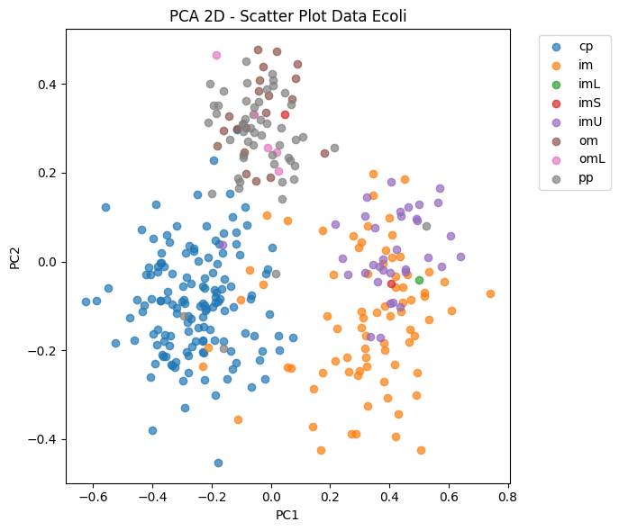
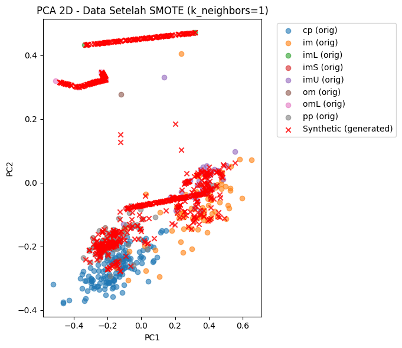

Oversampling#
Install Library#
!pip install pandas matplotlib scikit-learn imbalanced-learn
Requirement already satisfied: pandas in /usr/local/python/3.12.1/lib/python3.12/site-packages (2.1.4)
Requirement already satisfied: matplotlib in /usr/local/python/3.12.1/lib/python3.12/site-packages (3.7.5)
Requirement already satisfied: scikit-learn in /usr/local/python/3.12.1/lib/python3.12/site-packages (1.4.2)
Requirement already satisfied: imbalanced-learn in /usr/local/python/3.12.1/lib/python3.12/site-packages (0.14.0)
Requirement already satisfied: numpy<2,>=1.26.0 in /usr/local/python/3.12.1/lib/python3.12/site-packages (from pandas) (1.26.4)
Requirement already satisfied: python-dateutil>=2.8.2 in /home/codespace/.local/lib/python3.12/site-packages (from pandas) (2.9.0.post0)
Requirement already satisfied: pytz>=2020.1 in /home/codespace/.local/lib/python3.12/site-packages (from pandas) (2025.2)
Requirement already satisfied: tzdata>=2022.1 in /home/codespace/.local/lib/python3.12/site-packages (from pandas) (2025.2)
Requirement already satisfied: contourpy>=1.0.1 in /home/codespace/.local/lib/python3.12/site-packages (from matplotlib) (1.3.2)
Requirement already satisfied: cycler>=0.10 in /home/codespace/.local/lib/python3.12/site-packages (from matplotlib) (0.12.1)
Requirement already satisfied: fonttools>=4.22.0 in /home/codespace/.local/lib/python3.12/site-packages (from matplotlib) (4.58.5)
Requirement already satisfied: kiwisolver>=1.0.1 in /home/codespace/.local/lib/python3.12/site-packages (from matplotlib) (1.4.8)
Requirement already satisfied: packaging>=20.0 in /home/codespace/.local/lib/python3.12/site-packages (from matplotlib) (25.0)
Requirement already satisfied: pillow>=6.2.0 in /home/codespace/.local/lib/python3.12/site-packages (from matplotlib) (11.3.0)
Requirement already satisfied: pyparsing>=2.3.1 in /home/codespace/.local/lib/python3.12/site-packages (from matplotlib) (3.2.3)
Requirement already satisfied: scipy>=1.6.0 in /usr/local/python/3.12.1/lib/python3.12/site-packages (from scikit-learn) (1.11.4)
Requirement already satisfied: joblib>=1.2.0 in /usr/local/python/3.12.1/lib/python3.12/site-packages (from scikit-learn) (1.3.2)
Requirement already satisfied: threadpoolctl>=2.0.0 in /home/codespace/.local/lib/python3.12/site-packages (from scikit-learn) (3.6.0)
Requirement already satisfied: six>=1.5 in /home/codespace/.local/lib/python3.12/site-packages (from python-dateutil>=2.8.2->pandas) (1.17.0)
Load Dataset#
import pandas as pd
# Load CSV
df = pd.read_csv("ecoli2.csv")
print()
print("="*80)
print(df.head())
print("="*80)
# Pisahkan fitur & target
X = df[["mcg", "gvh", "lip", "chg", "aac", "alm1", "alm2"]]
y = df["localization_class"].astype(str)
print()
print("="*60)
print("Shape fitur:", X.shape)
print("Shape target:", y.shape)
print("="*60)
print()
print("---Distribusi target:---\n")
print("="*60)
print(y.value_counts())
print("="*60)
================================================================================
id protein_name mcg gvh lip chg aac alm1 alm2 localization_class
0 1 AAT_ECOLI 0.49 0.29 0.48 0.5 0.56 0.24 0.35 cp
1 2 ACEA_ECOLI 0.07 0.40 0.48 0.5 0.54 0.35 0.44 cp
2 3 ACEK_ECOLI 0.56 0.40 0.48 0.5 0.49 0.37 0.46 cp
3 4 ACKA_ECOLI 0.59 0.49 0.48 0.5 0.52 0.45 0.36 cp
4 5 ADI_ECOLI 0.23 0.32 0.48 0.5 0.55 0.25 0.35 cp
================================================================================
============================================================
Shape fitur: (336, 7)
Shape target: (336,)
============================================================
---Distribusi target:---
============================================================
localization_class
cp 143
im 77
pp 52
imU 35
om 20
omL 5
imS 2
imL 2
Name: count, dtype: int64
============================================================
Plot Data Asli#
import matplotlib.pyplot as plt
from sklearn.decomposition import PCA
# Transform ke 2 dimensi
pca = PCA(n_components=2)
X_pca = pca.fit_transform(X)
# Plot scatter
plt.figure(figsize=(7,6))
for lbl in sorted(y.unique()):
mask = (y == lbl)
plt.scatter(X_pca[mask,0], X_pca[mask,1], label=lbl, alpha=0.7)
plt.title("PCA 2D - Scatter Plot Data Ecoli")
plt.xlabel("PC1")
plt.ylabel("PC2")
plt.legend(bbox_to_anchor=(1.05,1), loc='upper left')
plt.tight_layout()
plt.show()

Balancing data dengan ADASYN#
from imblearn.over_sampling import ADASYN, SMOTE
from sklearn.preprocessing import LabelEncoder
import numpy as np
# Encode target menjadi angka
le = LabelEncoder()
y_enc = le.fit_transform(y)
X_vals = X.values
y_vals = y_enc
# Tentukan n_neighbors aman untuk ADASYN
class_counts = pd.Series(y_vals).value_counts()
min_count = class_counts.min()
n_neighbors = max(1, min_count-1)
print("\n=== Info ADASYN ===")
print("Jumlah sampel per kelas sebelum balancing:\n", class_counts)
print("n_neighbors yang digunakan:", n_neighbors)
# Lakukan ADASYN, fallback ke SMOTE kalau error
try:
adasyn = ADASYN(random_state=42, n_neighbors=n_neighbors)
X_res, y_res = adasyn.fit_resample(X_vals, y_vals)
method_used = f"ADASYN (n_neighbors={n_neighbors})"
print("✅ ADASYN berhasil dijalankan")
except Exception as e:
print("⚠ ADASYN gagal, menggunakan SMOTE sebagai fallback:", e)
smote = SMOTE(random_state=42, k_neighbors=max(1,n_neighbors))
X_res, y_res = smote.fit_resample(X_vals, y_vals)
method_used = f"SMOTE (k_neighbors={max(1,n_neighbors)})"
print("✅ SMOTE berhasil dijalankan sebagai fallback")
# Distribusi target setelah balancing
print("\nDistribusi kelas setelah balancing:\n", pd.Series(y_res).value_counts())
=== Info ADASYN ===
Jumlah sampel per kelas sebelum balancing:
0 143
1 77
7 52
4 35
5 20
6 5
3 2
2 2
Name: count, dtype: int64
n_neighbors yang digunakan: 1
⚠ ADASYN gagal, menggunakan SMOTE sebagai fallback: Not any neigbours belong to the majority class. This case will induce a NaN case with a division by zero. ADASYN is not suited for this specific dataset. Use SMOTE instead.
✅ SMOTE berhasil dijalankan sebagai fallback
Distribusi kelas setelah balancing:
0 143
1 143
3 143
2 143
4 143
5 143
6 143
7 143
Name: count, dtype: int64
plot data hasil resampling + tandai titik sintetis#
# PCA baru untuk data resampled
pca2 = PCA(n_components=2)
X_res_pca = pca2.fit_transform(X_res)
n_original = X_vals.shape[0] # jumlah data asli
mask_synthetic = np.arange(X_res.shape[0]) >= n_original # True = synthetic
# Plot
plt.figure(figsize=(7,6))
for lbl in sorted(le.classes_):
lbl_idx = le.transform([lbl])[0]
# Data asli
mask_orig = (y_res == lbl_idx) & (~mask_synthetic)
plt.scatter(X_res_pca[mask_orig,0], X_res_pca[mask_orig,1],
label=f"{lbl} (orig)", alpha=0.6)
# Data sintetis
plt.scatter(X_res_pca[mask_synthetic,0], X_res_pca[mask_synthetic,1],
marker='x', color='red', label='Synthetic (generated)', alpha=0.8)
plt.title(f"PCA 2D - Data Setelah {method_used}")
plt.xlabel("PC1")
plt.ylabel("PC2")
plt.legend(bbox_to_anchor=(1.05,1), loc='upper left')
plt.tight_layout()
plt.show()
